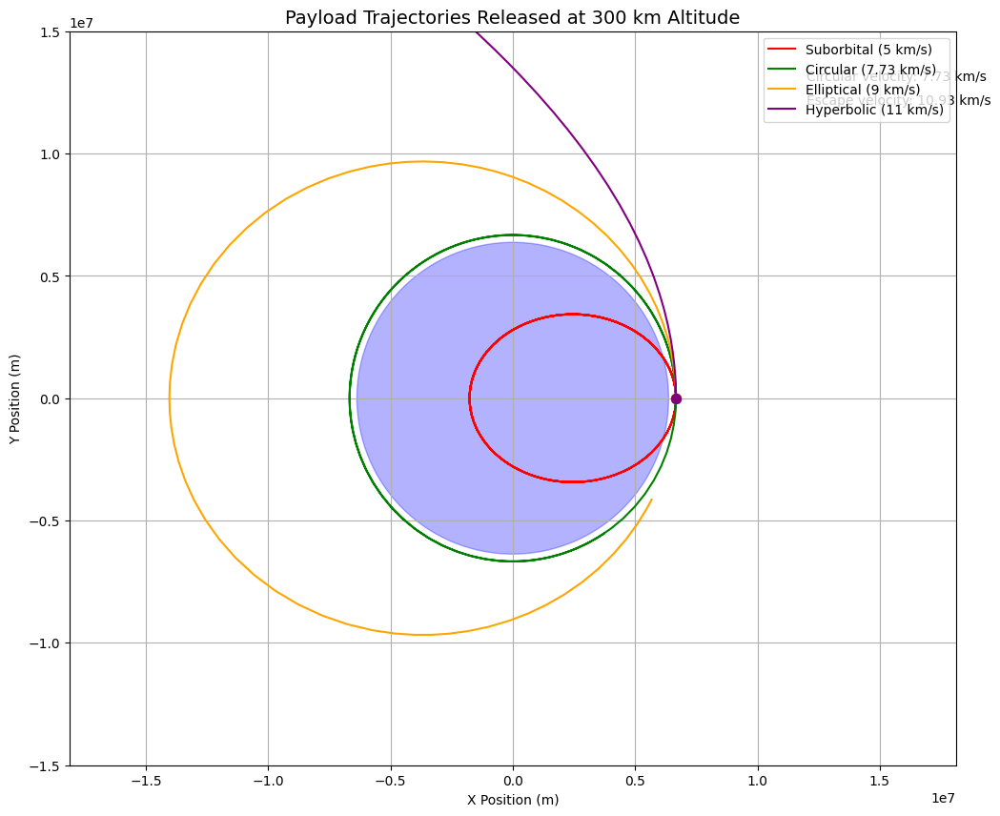

Problem 3
Trajectories of a Freely Released Payload Near Earth
Introduction
When a payload is released from a moving rocket near Earth, its subsequent trajectory is determined by the fundamental principles of orbital mechanics. The path the payload follows depends critically on its initial position, velocity vector, and the gravitational influence of Earth. This analysis explores the possible trajectories—elliptical, parabolic, and hyperbolic—and their implications for space mission scenarios such as orbital insertion, atmospheric reentry, or escape from Earth's gravitational influence.
Fundamental Physics
Newton's Law of Universal Gravitation
The gravitational force between Earth (mass \(M\)) and the payload (mass \(m\)) is given by:
where:
\(G = 6.67430 \times 10^{-11} \, \text{m}^3 \, \text{kg}^{-1} \, \text{s}^{-2}\) (gravitational constant)
\(r =\) distance between Earth's center and the payload
$\hat{r} = $ unit vector pointing from Earth's center to the payload
Equations of Motion
Using Newton's second law, the acceleration of the payload is:
In Cartesian coordinates (with Earth at the origin), this becomes a system of differential equations:
For simplicity, we'll consider 2D motion in the xy-plane.
Specific Orbital Energy
The shape of the orbit is determined by the specific orbital energy \((ε)\):
where v is the payload's velocity magnitude. The orbit type depends on ε:
-
\(ε < 0\): Elliptical orbit (bound)
-
\(ε = 0\): Parabolic trajectory (escape exactly)
-
\(ε > 0\): Hyperbolic trajectory (escape with excess energy)
Angular Momentum and Orbit Shape
The specific angular momentum \((h)\) is conserved:
The magnitude h determines the orbit's eccentricity \((e)\):
Initial Conditions and Trajectory Analysis
When a payload is released at altitude h above Earth's surface with initial velocity \(\mathbf{v}_0 = (v_{x0}, v_{y0})\) , we calculate:
Initial position: \(r₀ = R + h\) where \(R\) = Earth's radius (~6,371 km)
Initial velocity magnitude: \(v₀ = √(v_{x0}² + v_{y0}²)\)
Flight path angle: \(γ =\) atan \(2(v_{y0}, v_{x0})\)
Critical Velocities
Circular orbit velocity at radius r:
Escape velocity (parabolic trajectory):
Possible Scenarios
Suborbital (Elliptical impact trajectory):
-
\(v₀ < v_circ\)
-
Payload falls back to Earth (reentry)
Circular orbit:
- \(v₀ = v_circ\) with \(γ = 0\) (perfectly horizontal)
Elliptical orbit:
- v_circ < v₀ < v_esc
Escape trajectory:
- v₀ ≥ v_esc
Numerical Solution Approach
To compute the trajectory, we numerically integrate the equations of motion using methods like the Runge-Kutta 4th order (RK4):
For each time step Δt:
-
Compute acceleration components \(aₓ, a_y\)
-
Update velocity: \(vₓ += aₓΔt, v_y += a_yΔt\)
-
Update position: \(x += vₓΔt, y += v_yΔt\)
Example Simulation Parameters
Consider a payload released at:
-
Altitude: 300 km (r = 6,671 km)
-
Initial velocities (all cases start with purely horizontal velocity):
Suborbital:
v₀ = 5 km/s (< 7.73 km/s circular)
Circular orbit:
v₀ = 7.73 km/s
Elliptical orbit:
v₀ = 9 km/s
Escape:
v₀ = 11 km/s (> 10.9 km/s escape)
Graph Example

Results and Visualization
The trajectories would show:
-
Suborbital: Steep parabola intersecting Earth
-
Circular: Perfect circle around Earth
-
Elliptical: Oval-shaped orbit with perigee at release point
-
Hyperbolic: Open curve departing Earth
Applications
Understanding these trajectories is crucial for:
-
Satellite deployment (achieving desired orbits)
-
Spacecraft reentry (controlled descent)
-
Interplanetary missions (gravity assists, escape trajectories)
This analysis provides the foundation for mission planning and payload delivery in space operations. The same principles extend to orbital mechanics around any celestial body.